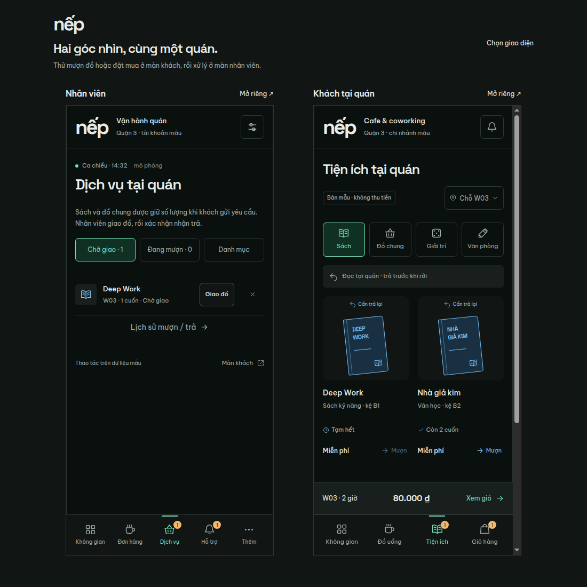

Vibing HKT: tính năng và kiến trúc hệ thống Vibing HKT: features and system architecture
Nền tảng quản lý quán cà phê và coworking. Một ứng dụng Expo / React Native chứa cả giao diện chủ quán lẫn giao diện khách, chạy trên một lõi demo cục bộ. Bên cạnh đó là một prototype HTML độc lập để thử thiết kế.
A platform for running cafes and coworking spaces. One Expo / React Native app holds both the merchant and the customer experience on top of a local demo core. A separate static HTML prototype sits beside it for design exploration.
Hiện trạng: đây là bản demo trên một thiết bị. Chưa có backend, đăng nhập hay thanh toán thật. Đã có sơ đồ 3D và màn onboarding quán có thể gọi OpenAI tùy chọn; mọi phần AI còn lại là quy tắc cố định. Mọi giao dịch đều là mô phỏng, và bản demo chưa đạt các tiêu chí mở pilot trong PRD.
Current state: this is a single-device demo. There is no backend, sign-in, or real payment yet. It now has a 3D floor view and a venue onboarding screen that can optionally call OpenAI; every other "AI" part is fixed rules. Every transaction is simulated, and the demo does not yet meet the pilot gates in the PRD.
Hai phần độc lập trong repository Two independent things in the repository
Expo Ứng dụng chínhThe app
app/ src/ tests/
e2e/
Mã nguồn thật: Expo SDK 58, React Native 0.88, Expo Router, Zustand, Three.js, TypeScript. Chạy trên web, iOS và Android.
The real codebase: Expo SDK 58, React Native 0.88, Expo Router, Zustand, Three.js, TypeScript. Runs on web, iOS and Android.
HTML Prototype “Nếp”The “Nếp” prototype
prototype/ tokens.css
design.md
Hai màn HTML tĩnh (vận hành và khách), không cần build, dữ liệu mẫu
riêng trong localStorage. Không dùng chung mã với ứng
dụng Expo.
Two static HTML screens (operations and customer), no build step,
with their own sample data in localStorage. It shares
no code with the Expo app.
Tính năngFeatures
Ba nhãn dưới đây cho biết mỗi tính năng đang ở đâu: Ứng dụng đã chạy trong ứng dụng Expo, Prototype chỉ có trong bản HTML, Kế hoạch mới nằm trong tài liệu.
Three labels show where each feature lives: App works in the Expo app, Prototype exists only in the HTML prototype, Planned is documented but not built.
Ứng dụngApp Khách hàngCustomer
Khám phá và chọn chỗSeat discovery
/customer/explore
- Danh sách chỗ có nhãn chữ: loại, giá/giờ, còn trống hay đang dùng.
- Lọc theo loại chỗ (desk, pod, booth), giá trần và “chỉ chỗ trống”.
- Tóm tắt công suất, ví dụ “5 trên 8 chỗ trống”.
- Ghim tối đa 3 chỗ yêu thích mỗi quán.
- Gợi ý “chỗ quen” sau 3 lượt ghé cùng quán.
- Bắt đầu phiên: tính theo phút, gói 2 giờ hoặc gói 4 giờ.
- Sơ đồ 3D của quán nằm trên danh sách chỗ, có thể ẩn đi.
- Lọc theo tiện ích: ổ cắm, cửa sổ, yên tĩnh, màn hình.
- Thẻ chi tiết chỗ với giá ước tính cho 1, 2 và 4 giờ.
- Trang quán: giờ mở cửa, địa chỉ mẫu và bảng giá theo hạng chỗ.
- Link chia sẻ chỗ (
?venue=…&seat=…), mở ra là chọn sẵn chỗ đó, không chứa dữ liệu cá nhân.
- Text-labelled seat list: kind, hourly rate, available or occupied.
- Filter by seat kind (desk, pod, booth), price ceiling and “available only”.
- Occupancy summary, e.g. “5 of 8 seats free”.
- Pin up to 3 favourite seats per venue.
- “Your usual” suggestion after 3 visits to the same venue.
- Start a session: metered, 2-hour bundle or 4-hour bundle.
- A 3D view of the venue sits above the seat list and can be hidden.
- Amenity filters: outlet, window, quiet, monitor.
- A seat detail card with estimates for 1, 2 and 4 hours.
- Venue page: opening hours, a demo address and a price table per seat tier.
- A shareable seat link (
?venue=…&seat=…) that preselects the seat and carries no personal data.
Phiên đang dùng và giỏ hàngLive session and cart
/customer/active-session
- Hóa đơn tạm tính trực tiếp: tiền chỗ + tiền món.
- Thông báo thời gian: còn lại, sắp hết (≤ 15 phút), ân hạn 10 phút, quá giờ.
- Giỏ hàng: tối đa 20 mỗi món, ghi chú 120 ký tự cho từng món.
- Theo dõi đơn: đã nhận → đang làm → đã phục vụ (theo giờ mô phỏng).
- Đặt lại đơn gần nhất theo giá hiện tại.
- Thẻ Wi-Fi và nội quy quán.
- Tùy chọn đồ uống: sữa, độ ngọt, đá. Không ảnh hưởng đến giá.
- Tìm món không phân biệt dấu; sở thích đã lưu của thành viên được điền sẵn.
- Ghi chú dị ứng đã lưu sẽ tạo yêu cầu cho nhân viên theo mỗi đơn.
- Đồng hồ tập trung kiểu Pomodoro, không liên quan đến tính tiền.
- Khi mất mạng: hiện thông báo và khóa nút đặt món, đặt lại, kết thúc phiên.
- Live estimate: seat time plus menu items.
- Time banner: remaining, ending soon (≤ 15 min), 10-minute grace, overtime.
- Cart: up to 20 per item, a 120-character note per line.
- Order tracking: queued → preparing → served (on simulated time).
- Reorder the latest order at current prices.
- Wi-Fi and house-rules card.
- Drink options: milk, sweetness, ice. They do not change the price.
- Diacritic-insensitive menu search; a member's saved preferences prefill new drinks.
- A saved allergy note raises a staff request with every order.
- A Pomodoro-style focus timer that never touches billing.
- When offline: a banner shows, and placing orders, reordering and ending the session are disabled.
Hỗ trợ tại chỗIn-seat support
- Nút “Gọi nhân viên” luôn tạo yêu cầu, không phụ thuộc bộ phân loại.
- Báo sự cố chỗ ngồi bằng các mẫu có sẵn.
- Ghi chú tự do (300 ký tự), hiểu cả tiếng Việt có dấu và không dấu.
- Phân loại theo từ khóa: dị ứng, an toàn, thanh toán, thiết bị, vệ sinh, đơn món, khác.
- Dị ứng, an toàn, thanh toán hoặc độ tin cậy dưới 0,6 luôn chuyển cho người.
- Trạng thái: đang chờ → đã nhận → đã xử lý.
- Gửi yêu cầu đổi chỗ.
- “Call staff” always creates a request, with no classifier in the way.
- Report a seat issue from presets.
- Free-text note (300 characters), matching Vietnamese with or without diacritics.
- Keyword triage: allergy, safety, payment, equipment, cleaning, order, other.
- Allergy, safety, payment, or confidence below 0.6 always goes to a human.
- Status: open → acknowledged → resolved.
- Ask to change seats.
Biên nhận và đánh giáReceipt and rating
/customer/receipt
- Kết thúc phiên sẽ trả chỗ và hiện biên nhận: gói, số phút, tiền chỗ, từng món, tổng.
- Chấm điểm lượt ghé từ 1 đến 5 và sửa lại được.
- Không thu tiền: tổng chỉ là ước tính demo.
- Gửi yêu cầu hoàn tiền từ biên nhận. Yêu cầu được chuyển cho nhân viên như một việc thanh toán; ứng dụng không bao giờ báo “đã hoàn tiền”.
- Ending a session releases the seat and shows a receipt: mode, minutes, seat time, each item, total.
- Rate the visit from 1 to 5, and change it later.
- No money is collected: the total is a demo estimate.
- Request a refund from the receipt. It goes to staff as a payment issue; the app never shows “refunded”.
Thành viênMembership
/customer/profile
- Tham gia bằng số điện thoại và mã OTP demo, theo từng quán.
- Tích 1 điểm cho mỗi 1.000 ₫; ghi nhận một lần cho mỗi phiên. Chưa đổi điểm được.
- Thống kê lượt ghé và thói quen (chỗ, gói hay dùng).
- Sở thích: loại sữa, độ ngọt, ghi chú dị ứng.
- Xóa dữ liệu lượt ghé, hoặc rời chương trình và xóa toàn bộ dữ liệu của quán đó.
- Huy hiệu và chuỗi ngày ghé, chỉ để trang trí.
- Mã giới thiệu: +50 điểm, một lần, trong cùng quán.
- Trang quyền riêng tư và cách dùng dữ liệu (
/customer/privacy).
- Join with a phone number and a demo OTP, per venue.
- Earn 1 point per 1,000 ₫, recorded once per session. Points cannot be redeemed yet.
- Visit stats and habits (usual seat and mode).
- Preferences: milk, sweetness, allergy note.
- Delete visit data, or leave the programme and delete everything for that venue.
- Cosmetic badges and visit streaks.
- Referral code: +50 points, once, within the same venue.
- A privacy and data-use page (
/customer/privacy).
Trợ lýAssistant
/customer/assistant
- Trả lời câu hỏi về chỗ, menu, Wi-Fi, nội quy, cách tính tiền và điểm.
- Hiểu tiếng Việt và tiếng Anh, dựa trên quy tắc, không gọi mô hình AI.
- Chỉ đọc: từ chối đặt chỗ, thanh toán hay gọi món thay khách.
- Answers questions about seats, the menu, Wi-Fi, house rules, billing and points.
- Understands Vietnamese and English, rule-based, with no AI model call.
- Read-only: it refuses to book, pay or order on the customer's behalf.
Ứng dụngApp Chủ quán và công cụ demoMerchant and demo tools
Sàn trực tiếpLive floor
/merchant/live-floor
- Số chỗ đang dùng trên tổng số chỗ của quán.
- Cùng danh sách chỗ với phía khách.
- Danh sách phiên đang mở: chỗ, số phút, tổng tạm tính.
- Thấy ngay phiên và món khách vừa thêm.
- Sơ đồ 3D cùng danh sách chỗ.
- Lối vào: “New order”, “Sell to {chỗ}”, “Tickets” và “Onboard Cafe / 3D Studio”.
- Occupied seats out of the venue's total.
- The same seat list the customer sees.
- Live tabs: seat, minutes, running total.
- Customer sessions and added items show up immediately.
- The 3D view alongside the seat list.
- Entry points: “New order”, “Sell to {seat}”, “Tickets” and “Onboard Cafe / 3D Studio”.
Bán hàng tại quầy (POS)Walk-in POS
/merchant/pos
- Tạo đơn cho khách vãng lai hoặc gắn với chỗ đang chọn.
- Lưới món, giỏ hàng có nút tăng giảm số lượng và tổng tiền.
- Đánh dấu món hết hàng: không thêm mới được, dòng đã có trong giỏ vẫn giữ.
- Ghi nhận trả tiền mặt hoặc online (mô phỏng); đơn rỗng không trả được.
- Chỉ hủy được đơn nháp; đơn đã trả thì không.
- Danh sách các đơn khác đang mở để quay lại.
- Create an order for a walk-in guest or for the selected seat.
- Menu grid and a cart with quantity buttons and a total.
- Mark items sold out: no new adds, but lines already in a cart stay.
- Record a cash or online payment (simulated); an empty order cannot be paid.
- Only a draft order can be cancelled, never a paid one.
- A list of other open orders to return to.
Bảng phiếu chế biếnTicket board
/merchant/tickets
- Đơn đã trả tiền thành một phiếu, có nhãn chỗ hoặc mã đơn.
- Bốn cột: chờ làm → đang làm → sẵn sàng → đã phục vụ.
- Phiếu chỉ tiến từng bước, không nhảy cóc.
- A paid order becomes a ticket, labelled with its seat or order number.
- Four columns: queued → preparing → ready → served.
- A ticket only advances one step at a time.
Sơ đồ 3D3D floor view
- Dựng bằng Three.js: phòng cắt lớp, ánh sáng theo chủ đề, nội thất và chỗ ngồi.
- Mỗi chỗ có vòng trạng thái; bấm vào chỗ trong cảnh 3D để chọn.
- Xoay, thu phóng và bốn góc máy: isometric, từ trên xuống, lối vào, quầy bar.
- Không có WebGL thì tự chuyển sang bản vẽ mặt bằng.
- Danh sách chỗ có nhãn chữ luôn hiển thị bên dưới.
- Built with Three.js: a cutaway room, themed lighting, fixtures and seats.
- Each seat has a status ring; click a seat in the scene to select it.
- Orbit, zoom and four camera presets: isometric, top-down, walk-in, bar.
- Without WebGL it falls back to a blueprint drawing.
- The text-labelled seat list always stays below it.
Onboarding quán và 3D StudioVenue onboarding and 3D Studio
/merchant/onboarding
- Chủ quán tải ảnh, video (tự tách khung hình) và tài liệu, hoặc dùng bộ mẫu có sẵn.
- Sinh ra một quán mới: chỗ ngồi, menu và cảnh 3D.
- Có khóa OpenAI thì gọi
gpt-4ovới đầu ra JSON có cấu trúc; không có thì dùng bộ sinh cố định. - Góp ý qua hội thoại nhiều lượt, xem khác biệt giữa các lần lặp và khôi phục lần trước.
- Chỉnh tay trong Studio rồi xuất bản; quán mới xuất hiện ngay trong thanh mô phỏng.
- The owner uploads photos, videos (keyframes are extracted) and documents, or loads a sample bundle.
- It generates a new venue: seats, menu and a 3D scene.
- With an OpenAI key it calls
gpt-4owith structured JSON output; without one it uses a deterministic generator. - Multi-turn chat feedback, a diff between iterations, and restore of an earlier one.
- Manual edits in the Studio, then publish; the new venue appears in the simulator bar at once.
Thanh mô phỏngSimulator bar
- Đổi vai trò chủ quán / khách. Đây là cách trình bày, không phải phân quyền.
- Đổi quán, kể cả quán tự tạo từ onboarding; phiên của quán khác được giữ nguyên.
- Kịch bản buổi sáng (7/8 chỗ ở quán mẫu) và buổi chiều (2 chỗ).
- Tua +30 phút cho mọi phiên. Không có đồng hồ chạy nền.
- Khôi phục toàn bộ dữ liệu mẫu.
- Switch merchant / customer. This is presentation, not permission.
- Switch venue, including venues created in onboarding; other venues keep their sessions.
- Morning (7/8 seats in a seeded venue) and afternoon (2 seats) scenarios.
- Advance every session by 30 minutes. There is no background clock.
- Reset all sample data.
Lưu trạng tháiPersistence
- Phiên, quán tự tạo và dữ liệu thành viên được lưu trên thiết bị và khôi phục khi tải lại.
- Dữ liệu lưu bị hỏng sẽ được thay bằng dữ liệu mẫu, kèm cảnh báo.
- Giỏ hàng và yêu cầu hỗ trợ chỉ tồn tại trong lần chạy hiện tại.
- Sessions, custom venues and membership data are saved on the device and restored on reload.
- A corrupt snapshot falls back to sample data with a warning.
- The cart and support requests live only for the current run.
Bảng hiện trạng theo nhóm chức năngStatus by product area
| NhómArea | Ứng dụng ExpoExpo app | Prototype HTML | Còn phải làmStill to build |
|---|---|---|---|
| Chỗ ngồi và sơ đồSeats and floor | Sơ đồ 3D (Three.js), danh sách chỗ, lọc, ghim; 3D Studio sinh bố cục3D view (Three.js), seat list, filters, pins; 3D Studio generates layouts | Sơ đồ SVG 2D, góc nghiêng 2.5D, chỉnh bố trí2D SVG map, 2.5D tilt, layout editing | Kéo thả chỗ trong 3D, bản nháp/xuất bản bố cục trên server, asset thậtDrag-and-drop editing in 3D, server-side layout draft/publish, real assets |
| Phiên và đặt chỗSessions and booking | Vào chỗ ngay, 3 kiểu tính tiềnWalk-in sessions, 3 billing modes | Đặt trước, check-in, hủyReservations, check-in, cancel | Giữ chỗ, chống trùng, gia hạn trên serverServer-side holds, concurrency, extensions |
| Gọi mónOrdering | Khách: giỏ hàng, theo dõi đơn, đặt lại. Quán: POS tại quầy, bảng phiếuCustomer: cart, order tracking, reorder. Merchant: walk-in POS, ticket board | POS mẫu, đánh dấu đã phục vụSample POS, mark served | Menu thật, modifier, hàng chờ bếpReal catalogue, modifiers, kitchen queue |
| Mượn đồ và bán lẻBorrowing and retail | — | Mượn sách, đồ dùng chung; bán đồ giải trí, văn phòng phẩmBorrow books and shared gear; buy games and stationery | Tồn kho giao dịch, đặt cọc, phí trễTransactional stock, deposits, late fees |
| Thanh toánPayment | Ước tính và biên nhận; POS ghi nhận tiền mặt/online mô phỏngEstimate and receipt; the POS records a simulated cash/online payment | Gói trả trước, quyết toán khi checkout, thử lỗi và thử lạiPrepaid package, settlement at checkout, failure and retry | Cổng thanh toán, sổ giao dịch, hoàn tiền, caGateway, ledger, refunds, shifts |
| Hỗ trợSupport | Gọi nhân viên, phân loại theo quy tắc, trợ lý chỉ đọc, yêu cầu hoàn tiền/đổi chỗCall staff, rule-based triage, read-only assistant, refund and seat-change requests | Hàng chờ hỗ trợ phía nhân viênStaff support queue | Phân loại bằng AI có người duyệtAI triage with human review |
| Giá và ưu đãiPricing and promotions | Giảm 15% cho gói giờ15% bundle discount | Duyệt ưu đãi mẫu giảm 10%Approve a sample 10% offer | Báo giá từ server, giá theo giờ, flash saleServer quotes, time-based pricing, flash sales |
| Thành viênLoyalty | Tham gia, tích điểm, sở thích, huy hiệu, giới thiệuJoin, earn points, preferences, badges, referral | Lịch sử điểm, đổi điểm khi checkout, hồ sơPoint history, redeem at checkout, profile | OTP thật, đổi điểm, sổ điểm trên serverReal OTP, redemption, server point ledger |
| AI | Onboarding gọi OpenAI tùy chọn từ client, có phương án cố định thay thếOnboarding optionally calls OpenAI from the client, with a deterministic fallback | Phân loại hỗ trợ bằng từ khóaKeyword support triage | AI chạy ở server, có kiểm tra đầu ra và người duyệtServer-side AI with output checks and human review |
| Tài khoản và quánIdentity and tenancy | Đổi vai trò/quán để demo; tạo quán mới qua onboardingDemo role and venue switch; new venues through onboarding | — | Đăng nhập, vai trò, cô lập dữ liệu theo quánSign-in, roles, tenant isolation |
Kiến trúc ứng dụngApp architecture
Ứng dụng chia thành bốn tầng. Tầng trên chỉ gọi xuống tầng dưới. Nghiệp
vụ nằm trong lõi và các file *Model.ts; route, màn hình và
component không tự tính tiền.
The app has four layers, and each one only calls downward. Business
rules live in the core and in *Model.ts files; routes,
screens and components never price anything themselves.
app/
src/features/
src/components/
SeatMapPropsThe SeatMapProps renderer contract
SeatMapPropsThe Three.js scene behind the same SeatMapProps
src/core/
Lõi được tách đôi có chủ đíchThe core is split in two on purpose
@/core
Phần thuần, không phụ thuộc framework: kiểu dữ liệu, dữ liệu mẫu,
tính tiền và createAppStore(), hàm trả về một store
mới mỗi lần gọi. Kiểm thử dùng trực tiếp phần này.
The pure, framework-independent part: types, fixtures, billing and
createAppStore(), which returns a fresh store on every
call. Tests use this part directly.
@/core/useAppStore
Module duy nhất của lõi chạm vào React và AsyncStorage. Nó giữ
singleton appStore, hook
useAppStore(selector) và
initializeStore().
The only core module that touches React and AsyncStorage. It owns
the appStore singleton, the
useAppStore(selector) hook and
initializeStore().
Các tính năng phía khách lặp lại đúng mẫu này: một file
*Model.ts chứa quy tắc thuần, một *Store.ts
là factory tạo store, và một hook use*.ts giữ singleton.
POS phía chủ quán cũng vậy, và hiện chưa nối với hóa đơn phiên: đơn POS
không cộng vào tổng của chỗ ngồi.
Customer features repeat the same pattern: a *Model.ts of
pure rules, a *Store.ts store factory, and a
use*.ts hook that owns the singleton. The merchant POS
follows it too, and is not yet connected to session bills: a POS order
does not add to a seat's total.
Năm store trạng tháiFive state stores
| Store | Giữ gìHolds | Lưu trên thiết bịPersisted |
|---|---|---|
appStore |
Vai trò, quán, kịch bản, chỗ đang chọn, mọi phiên và các quán tự tạo. Nguồn sự thật của hóa đơn.Role, venue, scenario, selected seat, all sessions and custom venues. The source of truth for the bill. | vibing-hkt:demo:v1 |
loyaltyStore |
Thành viên, sổ điểm, lượt ghé, sở thích, chỗ ghim; theo từng quán.Memberships, point ledger, visits, preferences, pinned seats; keyed by venue. | vibing-hkt:customer:v1 |
cartStore |
Các dòng trong giỏ và nhật ký đơn. Mỗi đơn vị món đi qua addItem của lõi.Cart lines and the order log. Every unit goes through the core's addItem.
|
Không (trong bộ nhớ)No (in memory) |
supportStore |
Yêu cầu hỗ trợ, biên nhận gần nhất, đánh giá.Support requests, the last receipt, ratings. | Không (trong bộ nhớ)No (in memory) |
posStore |
Đơn POS, phiếu chế biến và danh sách món hết hàng. Là mock tạm trong thư mục merchant, không sửa lõi; sẽ thay bằng API thật.POS orders, tickets and the sold-out list. A temporary mock inside the merchant folder that leaves the core untouched; it will be swapped for the real API. | Không (trong bộ nhớ)No (in memory) |
Khởi động và lưu trữStartup and persistence
initializeStore() và chưa cho thao tác.The root layout calls initializeStore() and blocks interaction.
isDemoState kiểm tra hình dạng dữ liệu.isDemoState validates its shape.
Khi đổi hình dạng DemoState, phải đổi khóa lưu trữ hoặc
thêm bước chuyển đổi dữ liệu.
If the shape of DemoState changes, change the storage key
or add a migration.
Luồng dữ liệu: kết thúc một phiênData flow: ending a session
Đây là chỗ các store phía khách phối hợp với lõi, qua
finishSession():
This is where the customer stores coordinate with the core, through
finishSession():
VisitSnapshot (chỗ, phút, tiền, món) trước khi lõi xóa phiên.Build a VisitSnapshot (seat, minutes, totals, items) before the core drops the session.
appStore.endSession() trả chỗ.appStore.endSession() releases the seat.
supportStore giữ snapshot làm biên nhận.supportStore keeps the snapshot as the receipt.
cartStore quên giỏ và đơn của phiên đó.cartStore forgets that session's cart and orders.
loyaltyStore ghi lượt ghé và cộng điểm nếu là thành viên.loyaltyStore records the visit and adds points for members.
/customer/receipt.Navigate to /customer/receipt.
Các quy ước quan trọngRules that hold everywhere
- Vai trò chỉ là cách trình bày. Cả hai vai trò thấy cùng các phiên; không được coi vai trò là quyền.
- Thời gian chỉ đi qua thanh mô phỏng. Tải lại trang không cộng thêm phút nào.
- Mọi tra cứu theo quán. Phiên của mọi quán nằm chung một mảng và luôn được lọc theo
venueId. - Giá được chụp lại. Phiên giữ giá giờ và giá món tại lúc tạo, nên đổi dữ liệu mẫu không làm đổi hóa đơn đang mở.
- Hành động trả kết quả rõ ràng.
startSession,addItem,endSessiontrảActionResultđể màn hình hiển thị; ID quán sai là lỗi lập trình và sẽ ném lỗi. - Không cần màu để hiểu. Tình trạng chỗ luôn có nhãn chữ; cảnh 3D nhận cùng
SeatMapPropsvà danh sách chỗ luôn được giữ lại. - Khóa OpenAI chỉ ở trong bộ nhớ. Màn onboarding nhận khóa do người dùng nhập, không lưu và không đặt trong
EXPO_PUBLIC_*. Tuy vậy lời gọi đi thẳng từ client đến OpenAI, nên chỉ phù hợp cho demo.
- Roles are presentation. Both roles see the same sessions; a role is never a permission check.
- Time only moves through the simulator. A reload adds no elapsed minutes.
- Every lookup is venue-scoped. Sessions for all venues share one array and are always filtered by
venueId. - Prices are snapshotted. A session keeps the hourly rate and item prices from when it was created, so fixture changes do not alter open tabs.
- Actions return explicit results.
startSession,addItemandendSessionreturn anActionResultfor the screen to show; an invalid venue ID is a programmer error and throws. - Colour is never required. Availability always has a text label; the 3D scene takes the same
SeatMapPropsand the seat list always stays. - The OpenAI key lives only in memory. The onboarding screen takes a key the user types, never stores it and never reads
EXPO_PUBLIC_*. The call still goes straight from the client to OpenAI, so it is fit for a demo only.
Mô hình dữ liệu và tính tiềnData model and billing
Venue
Quán: tên, màu nhấn, danh sách chỗ, menu và cấu hình cảnh 3D tùy chọn. Có ba quán mẫu, mỗi quán 8 chỗ và 2 món: The Grind Co-Work, Matcha & Muse Studio, CyberPod 24/7 Hub. Quán tự tạo từ onboarding được kiểm tra bằng isValidVenue trước khi lưu.
A venue: name, accent colour, seats, menu and an optional 3D scene config. Three are seeded with 8 seats and 2 menu items each: The Grind Co-Work, Matcha & Muse Studio, CyberPod 24/7 Hub. Venues created in onboarding are validated by isValidVenue before they are saved.
Seat
Chỗ 1–5 là desk giá 30.000 ₫/giờ; chỗ 6–7 là pod và chỗ 8 là booth, giá 40.000 ₫/giờ. Mỗi chỗ có tọa độ lưới x, z và khu vực, dùng để đặt chỗ trong cảnh 3D.
Seats 1–5 are desks at 30,000 ₫/h; seats 6–7 are pods and seat 8 is a booth, at 40,000 ₫/h. Each seat has grid coordinates x, z and a zone, used to place it in the 3D scene.
Session
Một phiên dùng chỗ: quán, chỗ, khách, kiểu tính tiền, số phút đã trôi, giá giờ đã chụp và các món đã gọi.
One seat session: venue, seat, customer, billing mode, elapsed minutes, the locked hourly rate and the items ordered.
DemoState
Toàn bộ trạng thái lõi: vai trò, quán đang chọn, kịch bản, chỗ đang chọn, danh sách phiên, bộ đếm ID và các quán tự tạo.
The whole core state: role, active venue, scenario, selected seat, the session list, an ID counter and any custom venues.
Quy tắc tính tiềnBilling rules
(src/core/billing.ts)
Tiền là số nguyên VND. Đây là chính sách demo, chưa phải giá được duyệt cho pilot.
Money is integer VND. These are demo policies, not approved pilot pricing.
| KiểuMode | Cách tính tiền chỗSeat time charge |
|---|---|
METERED_OPEN |
Làm tròn lên theo block 15 phút, mỗi block bằng 1/4 giá giờ.Rounded up to 15-minute blocks, each a quarter of the hourly rate. |
BUNDLE_2H · BUNDLE_4H |
Trả trước 2 hoặc 4 giờ với giá giảm 15%. Quá giờ có 10 phút ân hạn; vượt ân hạn thì phần vượt được tính theo block 15 phút.2 or 4 hours up front at 15% off. Overtime has a 10-minute grace; beyond it, the excess is charged in 15-minute blocks. |
Ví dụ kiểm tra tay: chỗ 8 (40.000 ₫/giờ), tính theo phút, một ly 45.000 ₫, tua +30 phút → 2 block × 10.000 ₫ + 45.000 ₫ = 65.000 ₫. Gói 2 giờ ở chỗ 30.000 ₫/giờ có giá 51.000 ₫.
Manual check: seat 8 (40,000 ₫/h), metered, one 45,000 ₫ drink, advance +30m → 2 blocks × 10,000 ₫ + 45,000 ₫ = 65,000 ₫. A 2-hour bundle on a 30,000 ₫/h seat costs 51,000 ₫.
Prototype HTML “Nếp”The “Nếp” HTML prototype
Bản thử thiết kế chạy độc lập: nền tối, nhấn xanh mint, bố cục điện
thoại rộng tối đa 480 px với thanh điều hướng dưới và bottom sheet. Hai
màn dùng chung dữ liệu qua localStorage khi mở cùng origin,
nên đơn của khách hiện ngay bên màn vận hành. Màn khách đi theo năm
bước: xác định bàn (QR, số bàn hoặc sơ đồ) → chọn dịch vụ → đối chiếu
gói trả trước → sử dụng → checkout.
A standalone design exploration: dark surfaces, mint accents, a phone
layout up to 480 px wide with bottom navigation and bottom sheets. The
two screens share data through localStorage on the same
origin, so a customer order appears on the operations screen at once. The
customer screen follows five steps: identify the table (QR, table
number or map) → choose services → check a prepaid package → use →
checkout.

FE1 Vận hànhOperations
- Sơ đồ và danh sách chỗ, lọc theo khu, trạng thái, khách, ngày.
- Tạo đặt chỗ mẫu, check-in, kết thúc phiên, hủy.
- POS mẫu: tạo đơn đồ uống, đánh dấu đã phục vụ.
- Nhận và hoàn tất yêu cầu hỗ trợ.
- Duyệt hoặc dừng ưu đãi mẫu giảm 10%.
- Chỉnh bố trí chỗ bằng nút hoặc phím mũi tên.
- Tab Dịch vụ: giao đồ mượn, nhận trả, hủy yêu cầu.
- Thấy nhãn đơn chưa trả tiền; không thể trả chỗ khi lượt của khách chưa quyết toán.
- Seat map and list, filtered by zone, status, guest and date.
- Create sample reservations, check in, end a session, cancel.
- Sample POS: create drink orders, mark them served.
- Take and complete support requests.
- Approve or stop a sample 10% offer.
- Edit the layout with buttons or arrow keys.
- Services tab: hand out loans, take returns, cancel requests.
- Unpaid orders are labelled, and a seat cannot be released while the customer's visit is unsettled.
FE2 KháchCustomer
- Xác nhận bàn bằng link QR, số bàn hoặc sơ đồ; không chọn sẵn bàn.
- Chọn thời lượng, đồ uống, đồ mượn và sản phẩm trước khi bắt đầu.
- Đối chiếu gói trả trước: gói mẫu
NEP2Hgồm 120 phút và một cà phê sữa. - Gọi thêm trong lúc dùng; checkout quyết toán phần ngoài gói, có thử lỗi và thử lại.
- Lịch sử điểm, đổi điểm khi checkout và hồ sơ cục bộ.
- Gửi yêu cầu hỗ trợ bằng văn bản tự do.
- Mượn miễn phí: sách đọc tại quán, ổ cắm nối dài, rổ, cáp.
- Mua mang về: đồ giải trí và văn phòng phẩm.
- Phiếu mượn: chờ giao → đang mượn → đã trả.
- Confirm the table by QR link, table number or map; no table is preselected.
- Choose duration, drinks, loans and products before starting.
- Check a prepaid package: the sample
NEP2Hcovers 120 minutes and one latte. - Add more during the visit; checkout settles what the package does not cover, with a failure and retry path.
- Point history, redeeming points at checkout, and a local profile.
- Send a free-text support request.
- Borrow for free: in-house books, extension sockets, baskets, cables.
- Buy to keep: games and stationery.
- Loan slips: requested → borrowed → returned.
| TệpFile | Vai tròRole |
|---|---|
prototype/shared.js |
Dữ liệu mẫu, localStorage, SVG mặt bằng và icon dùng chung.Sample data, localStorage, the floor-plan SVG and shared icons.
|
services.js · service-ui.js |
Danh mục, tồn mẫu, mượn/giao/trả và bán hàng.Catalogue, sample stock, borrow/hand-out/return and sales. |
journey.js · journey.css |
Mô hình vòng đời một lượt dùng: chụp giá và quyền lợi gói, kiểm tra lại chỗ và tồn, quyết toán không lặp.The visit lifecycle model: snapshots prices and package rights, revalidates seat and stock, settles without duplicate effects. |
operations.* · customer.* |
Hai màn và logic riêng của từng màn.The two screens and their own logic. |
preview.html |
Hai màn thật đặt cạnh nhau bằng iframe.Both real screens side by side in iframes. |
tokens.css · styles.css ·
mobile.css
|
Design token, style nền và bố cục điện thoại.Design tokens, base styles and the phone layout. |
Chạy ở thư mục gốc của repository (vì trang nạp
../tokens.css) rồi mở /prototype/:
Serve the repository root (the pages load ../tokens.css),
then open /prototype/:
python3 -m http.server 4173 --bind 127.0.0.1
Kiểm thử, CI và cách chạyTesting, CI and running it
npm ci npm run web # dev loop npm run check # typecheck + lint + vitest npm run format:check # prettier npm run build:web # expo export → dist/ npm run test:e2e # Playwright (npx playwright install chromium)
| LớpLayer | Công cụTool | Phạm viCovers |
|---|---|---|
| Quy tắc nghiệp vụDomain rules | Vitest | 353 kiểm thử trong 14 file: lõi, lưu trữ, POS, onboarding/3D và các tính năng phía khách.353 tests in 14 files: core, storage, POS, onboarding/3D and the customer features. |
| Luồng trên trình duyệtBrowser flows | Playwright | 9 kịch bản trong 4 file (demo, POS, sửa lỗi POS, onboarding 3D), mỗi kịch bản chạy ở khung desktop và mobile.9 scenarios in 4 files (demo, POS, POS fixes, 3D onboarding), each run in a desktop and a mobile viewport. |
| Prototype | node --test |
37 kiểm thử quy tắc: 13 cho mượn, trả và tồn (services.check.cjs), 24 cho hành trình khách (journey.check.cjs).37 rule tests: 13 for borrow, return and stock (services.check.cjs), 24 for the customer journey (journey.check.cjs).
|
| CI | GitHub Actions |
Theo thứ tự: format:check, check, build:web, test:e2e, trên mỗi pull request.In order: format:check, check, build:web, test:e2e, on every pull request.
|
Phân công: BE giữ src/core/domain.ts,
billing.ts và API sau này; FE1 giữ
src/features/merchant và src/components; FE2
giữ src/features/customer. Thay đổi ở phần dùng chung cần
báo trước trong PR.
Ownership: BE owns src/core/domain.ts,
billing.ts and the future API; FE1 owns
src/features/merchant and src/components; FE2
owns src/features/customer. Changes to shared paths need
to be flagged in the PR.
Kế hoạchPlanned Kiến trúc đích cho pilotTarget architecture for the pilot
Phần này là đề xuất trong PRD, chưa có mã nguồn. Mục tiêu là pilot ở 1–2 quán trong 10–12 tuần với 1 BE và 2 FE: một backend dạng modular monolith, một cơ sở dữ liệu quan hệ, một hàng đợi tác vụ và kho lưu asset.
This section is the PRD's proposal; none of it exists in code. The goal is a pilot in 1–2 venues over 10–12 weeks with 1 BE and 2 FE: one modular-monolith backend, one relational database, one job queue and object storage for assets.
Từ demo đến pilotFrom demo to pilot
- Server tính lại mọi khoản tiền; không tin tổng tiền do client gửi lên.
- Xác thực và phạm vi theo quán/chi nhánh được ép ở backend.
- Báo giá có hạn, lệnh idempotent, kiểm tra trùng chỗ trong transaction.
- Phiên và sổ giao dịch bền vững; không suy ra thanh toán thành công từ trạng thái cục bộ.
- Khóa OpenAI và khóa thanh toán chỉ nằm ở server, không bao giờ trong
EXPO_PUBLIC_*. - Lời gọi OpenAI của onboarding chuyển về một endpoint có xác thực ở server; bố cục đã xuất bản lưu trong cơ sở dữ liệu của quán.
- Giữ lại adapter demo để frontend tiếp tục làm việc độc lập.
- The server recomputes every amount; a total sent by the client is never trusted.
- Authentication and tenant/branch scope are enforced by the backend.
- Quotes expire, commands are idempotent, and seat conflicts are checked inside a transaction.
- Sessions and the ledger are durable; payment success is never inferred from a local state change.
- OpenAI and payment keys stay on the server, never in
EXPO_PUBLIC_*. - The onboarding OpenAI call moves behind an authenticated server endpoint, and published layouts are stored in the tenant database.
- The demo adapter stays so frontend work can continue independently.
Đọc tiếpFurther reading
| Tài liệuDocument | Nội dungWhat it covers |
|---|---|
| docs/core.md |
Hợp đồng lõi: hành động, tính tiền, lưu trữ. Đọc trước khi sửa src/core.The core contract: actions, billing, storage. Read before changing src/core.
|
| AGENTS.md · CONTRIBUTING.md | Lệnh, quy ước, phân công và bài kiểm tra tay.Commands, conventions, ownership and the manual smoke check. |
| PRD | Yêu cầu FR01–FR08, phân quyền, kế hoạch 10–12 tuần, cổng mở pilot.Requirements FR01–FR08, permissions, the 10–12 week plan, pilot gates. |
| mvp-features.md · batch 2 · batch 3 | Đặc tả 300 tính năng MVP (F001–F300) qua ba đợt; cột Demo cho biết phần nào đã có.The 300-feature MVP spec (F001–F300) in three batches; the Demo column shows what exists. |
| fe1-pos-plan.md | Kế hoạch POS của FE1: đã có đơn tại quầy và bảng phiếu; còn ca làm việc, hoàn tiền và nối API thật.FE1's POS plan: walk-in orders and the ticket board are built; shifts, refunds and the real API are still to come. |
| react-native-plan.md | Kế hoạch 4 giai đoạn: nền tảng, 3D, POS và phân loại AI, giá động và loyalty. Cấu trúc nhiều app trong đó đã được thay bằng cấu trúc một app hiện tại.The 4-phase plan: foundation, 3D, POS and AI triage, dynamic pricing and loyalty. Its multi-app layout was superseded by today's single-app layout. |
| prototype.md · customer-journey.md · design.md | Hướng dẫn prototype, hành trình khách năm bước và hệ thiết kế.The prototype guide, the five-step customer journey and the design system. |